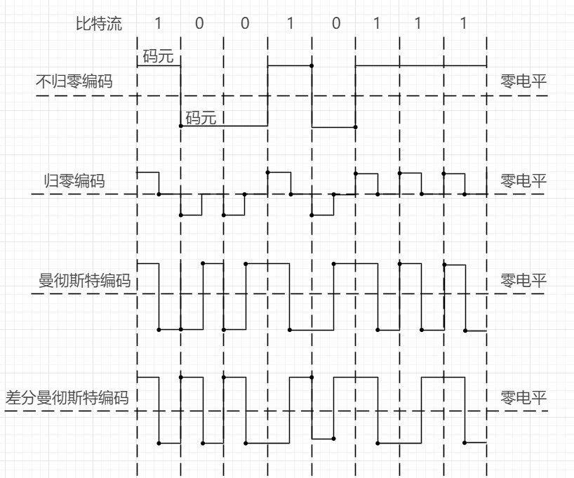
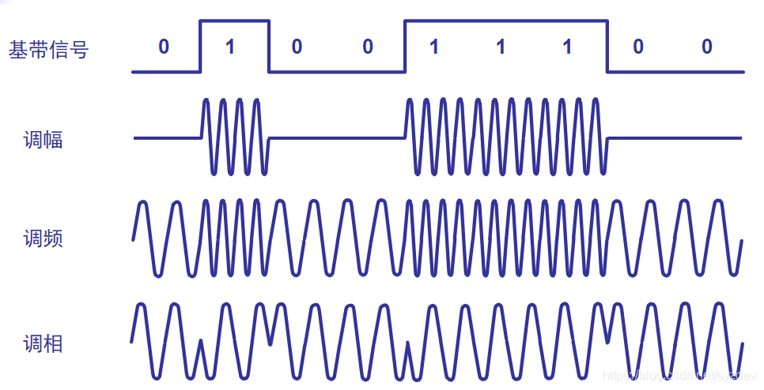

计算机网络（二）
物理层的基本概念
在了解过计算机网络的几个分层模型后，我们来分别了解一下这些层，这一篇我们先来了解一下物理层，在计算机网络中用来连接各种网络设备的传输媒体有很多，大致可以分为两类，导引型传输媒体和非导引型传输媒体。导引型传输媒体有双绞线、同轴电缆、光纤，非导引型传输媒体常常是微波通信。物理层考虑的是怎样才能在连接各种计算机的传输媒体上传输数据比特流，物理层会为上层的数据链路层提供透明的服务，为数据链路层屏蔽了各种传输媒体的差异，使数据链路层只需要考虑如何完成本层协议和服务，而不用考虑网络具体传输用到的媒体是什么。所以物理层协议的主要任务要解决四个问题：
- 指明接口所用接线器的形状和尺寸、引脚数目和排列、固定和锁定的装置
- 指明接口电缆的各条线上出现的电压的范围
- 指明某条线上出现的某一电平的电压表示何种意义
- 指明对于不同功能的各种可能事件的出现顺序
因为物理层用来传输的物理媒介众多，所以物理层的协议也很多，但每一个协议都包含上述四个问题的具体解决方案，所以我们要掌握的应该是一些基本概念，而不是某个具体的物理层协议。
传输方式
物理层讲究的是如何将比特流在信道上进行传输，所以我们就来了解一下物理层的传输方式。
串行传输和并行传输
串行传输的意思是数据是一个比特一个比特被送上信道的，所以只需要一条信道就可以完成串行传输。而并行传输的意思是同一时间有n个比特被送上信道，这就需要n条信道进行传输了，并行传输的优点是速度为串行传输的n倍，但成本也高一点。在计算机内部CPU与其他电子器件进行数据传输用的是数据总线，数据总线的宽度有8位、16位、32位和64位，所以计算机内部往往使用并行传输，而在计算机网络中进行远距离的数据传输大多使用的是串行传输。
同步传输和异步传输
同步传输，数据以稳定的比特流的形式传输，字节之间没有间隔，接收端在每一个比特信号的中间时刻进行检测，以判别接受的是0还是1，但每一个主机的时钟多少都会存在差异，这就会导致同步传输会出现误差，所以同步传输的同时要将收发双方的时钟同步，同步的方法有两种一种是外同步，一种是内同步。外同步指在收发双方之间添加一条单独的时钟信号线，传输数据的同时传输时钟信号以同步双方时钟。内同步是指发送端将时钟同步信号编码到发送数据中一同传输（例如曼彻斯特编码）。
异步传输，异步传输说的是数据以字节的形式在信道上传输，且每个字节间间隔时间不等，目的主机只需要与当前接收到的字节时钟同步即可，为此异步传输的字节前后要分别加上起始位和结束位。异步传输的异步体现在每两个字节间的间隔时间不等，但是字节中每一比特的持续时间仍然相同。
单工通信、半双工通信、双工通信
这个我们之前已经有提到过，这里在复习一遍。
单工通信指的是在通信过程中只有一条单向的信道，一方作为发送端，一方作为接收端进行单向的通信，例如我们听广播，电台就是发送端，收音机就是接收端。
半双工通信指的是在通信过程中有两条信道，这两条信道方向相反，双方都可以作为发送端或接收端，但是在同一时间中，只有一方可以作为发送端，例如对讲机，在同一时间只有一台对讲机可以向其他对讲机发送信息。
双工通信指的是在在通信过程中有两条信道，这两条信道方向相反，双方都可以作为发送端或接收端，双方可以同时发送信息，也同时接收信息，例如我们平时打电话，就是这种传输方式。
编码与调制
在计算机网络中，计算机需要处理和传输用户的文字、图片、音频和视频，它们可以统称为消息，这些消息在计算机内会转变为二进制数据，之后这些二进制数据会被网卡转换为电信号，由发送端发出的原始电信号叫做基带信号，基带信号又被分为两种一种是数字基带信号，一种是模拟基带信号。数字基带信号就是计算机内部CPU和内存之间传输的信号，模拟基带信号可以是麦克风接收到声音后转换成的电信号。信号需要在信道中进行传输，根据信号的分类，信道也被分为了数字信道和模拟信道。在不改变信号性质的前提下，将数字信号/模拟基带信号的波形进行变化的行为叫做编码，编码后产生的信号还是数字信号/模拟信号，在数字信道中进行传输。把数字基带信号/模拟基带信号的频率范围搬移到较高的频段并转换为模拟信号的行为叫做调制，调制后的信号是模拟信号，在模拟信道中传输。一段信号中会有不同的波形用来表示0和1，这些表示0和1的波形片段我们称为码元。
常用编码方式
接下来我们看一看常用的编码方式都有哪些：

常用的编码有四种分别是：
- 不归零编码：不归零编码和它的名字一样，意思是在比特流的每一个码元持续时间内，都不归零。若要实现不归零编码就要实现发送方的发送和接收方的接受做到严格的同步，我们可以加上一根传输线来传输时钟信号来让双方同步。在计算机网络中我们并不提倡这么做，所以因为不归零编码存在着同步问题所以计算机网络中的数据传输不使用这种办法。
- 归零编码：我们根据图片可以得知，在归零编码中，每一个码元传输结束后都要“归零”，所以接收方只需要接收信号归零后的信号即可，不需要单独的时钟信号，但本质上归零编码用归零的形式放到了数据之中，这种数据我们叫它自同步信号。虽然解决了时钟信号的传输问题，但是归零编码中大部分的数据带宽都用来传输“归零”了，这也是一种浪费。
- 曼彻斯特编码：曼彻斯特编码的特点是会发生跳变，如果发生了负跳变（由正电平变为负电平）表示1，正跳变（由负电平变为正电平）表示0，码元中间时刻的跳变即表示时钟也表示数据。
- 差分曼彻斯特编码：差分曼彻斯特编码也会发生跳变，但是它用码元开始处电平是否变化来表示数据，如果当前码元开始电平和上一个码元结束电平相同则当前码元表示1，反之表示0。差分曼彻斯特编码的跳变只表示时钟
常用调制方式
我们再看看常用的调制方式有哪些:

常用的调制方式有三种:
- 调幅（AM）：载波的振幅随基带数字信号而变化
- 调频（FM）：载波的频率随基带数字信号而变化
- 调相（PM）：载波的初始相位随基带数字信号而变化
使用基本的调制方法，1个码元只能包含一个比特信息，如果希望一个码元中包含更多信息，我们可以使用混合调制的方式来调制，但因为频率和相位是相关的，所以一次只能调制频率和相位两个中的一个。一般情况下，我们常将相位和振幅结合在一起调制，称为正交振幅调制，QAM。
信道的极限容量
信号的传输不是完整无误的进行传输的，尤其是在很远的距离进行传输，一个输入信号的波形在经过通信质量较好的信道后，接收端有能力根据失真不严重的信号还原出原信号，但如果一个输入信号经过了通信质量很差的信道后，接收端很难还原失真严重的信号。以下这些因素都会使信号失真：
- 码元传输速率
- 信号传输距离
- 噪声干扰
- 传输媒体质量
奈氏准则
1924 年，奈奎斯特 (Nyquist) 就推导出了著名的奈氏准则。他给出了在假定的理想条件下，为了避免码间串扰，码元的传输速率的上限值。
奈氏准则讲的是理想低通信道的最高码元传输速率为2W Baud，理想带通信道的最高码元传输速率为W Baud。这里说的W是信道（频率）带宽，Baud是单位波特，也就是码元/秒的意思。码元传输速率又称为波特率、调制速率、波形速率或者符号速率，它与比特率有一定的关系：
- 当一个码元只携一比特的信息量时，波特率（码元/秒）与比特率（比特/秒）在数值上是相等的、
- 当一个码元携带n比特的信息量时，则波特率转换成比特率时，数值要成以n
因为奈氏准则是在理想状态下推导出来的准则，所以实际信道所能传输的最高码元速率要明显的低于奈氏准则的上限速率。因为码元的传输速率受奈氏准则的制约，所以要提高信息的传输速率，就必须设法使每个码元能携带更多个比特的信息量。这就需要采用多元制的调制方法，如正交振幅调制 QAM 。那是不是我们有可以无限的提高码元携带的比特数量，就可以无限的提高信息的传输速率呢？答案是否定的，因为在信道的极限信息传输速率还要受限于实际的信号在信道中传输时的信噪比。噪声存在于所有的电子设备和通信信道中，噪声是随机产生的，它的瞬时值有时会很大。因此噪声会使接收端对码元的判决产生错误。信噪比就是信息量和噪音的比值。
香农公式
1984年，香农 (Shannon) 用信息论的理论推导出了带宽受限且有高斯白噪声干扰的信道的极限、无差错的信息传输速率。公式为：
公式中C表示信道的极限信息传输速率（b/s），W表示信道（频率）带宽（HZ），S表示信道内所传信号的平均功率，N表示信道内得高斯噪声功率。我们还可以根据N和S计算信噪比，公式为：
根据公式我们可以知道信道带宽或信道中信噪比越大，信息传输的速率越高。在实际信道上能够达到的信息传输速率会远远低于该公式的极限传输速率，因为在实际信道中，信号还有其他的损失，比如脉冲干扰，信号在传输中的衰减和失真，香农公式并未考虑这些问题。因此根据香农公式和奈氏准则，诞生了大量的调制方法提高调制速度和提高信噪比的方法。
 wechat
wechat alipay
alipay